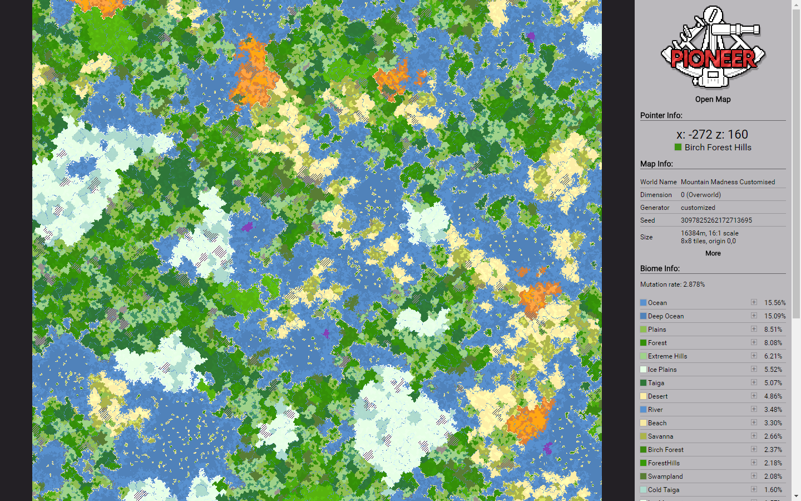

Pioneer Terrain Survey
Having trouble finding your favourite biome to set up your base? Wondering which way to travel to reach the ocean, or which way to a mushroom island? Developing a terrain mod and need to know how things are laid out at a large scale without spending hours exploring? Pioneer is for you.
Pioneer is a single-player only utility mod which facilitates the mapping of biomes in the world via a chat command. It cannot be used with dedicated servers as it relies on graphics code which is not loaded on the server side - if you want to map a server world, you should get the world seed and create a local version instead. It won't crash a dedicated servers if included in a pack though, as it is explicitly not loaded by them.
> > Online Map Viewer < <
Maps generated with Pioneer are read by loading them into the web-based viewer. Lots of information is available with each map, such as the seed and generator used for the world, as well as any generator options for world types which use them. A break down of biome distribution is also available, and biomes can be highligted on the map by clicking their colour swatches or double-clicking on them in the map.
The reader can also be downloaded for local use here. It is identical to the one used on the page linked above.
Screenshot
Example Maps
- 4:1 Vanilla desert
- Desert close-up at 1000, -1000
- Mountain Madness customised world
- HUGE vanilla render [WARNING: may take a long time]
- ATG 2.0.0 release
> > Download Mod < <
The /pioneer command requires op status or for cheats to be enabled and takes several arguments, some optional:
/pioneer <radius>|stop [<scale>] [<centerX> <centerZ>]
- Radius: This is the radius in blocks to render. Takes scale into account, so scale 2 would make a map half the size along each side.
- Stop: When used alone instead of radius, will cancel currently running jobs.
- Scale: Renders only every <scale> blocks, to cover larger areas with smaller maps. 16 is one pixel in the final map per chunk, for example. Defaults to 1 when omitted.
- CenterX and CenterZ: The coordinates to use as the centre of the map. Must be used together or not at all. Default to current player position if omitted.
Pioneer, the site, and all the stuff in it were written by TTFTCUTS, March 2017